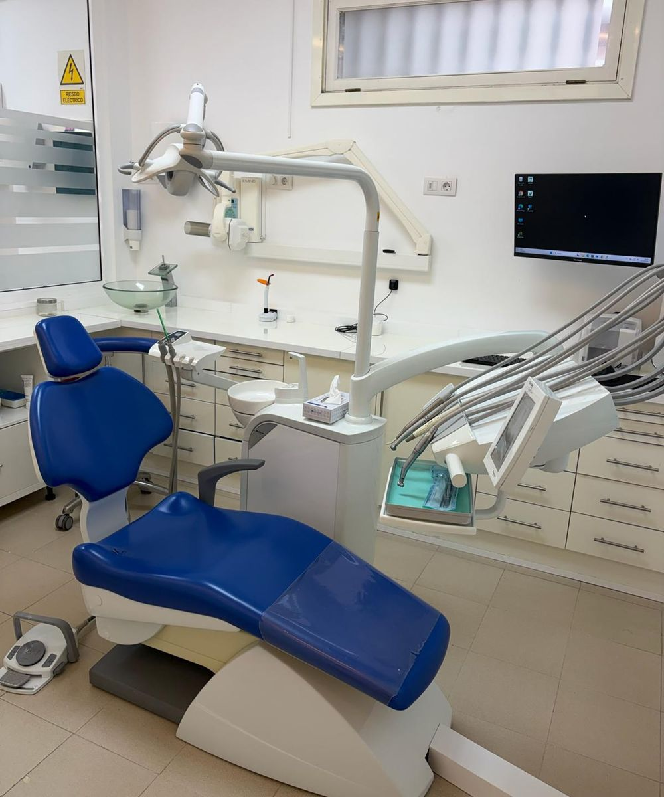

Aspecto natural
La corona se diseña con la forma y el color de tus dientes. Nadie notará cuál es el implante.
Implantología · La Orotava
Recupera un diente perdido con una raíz de titanio y una corona hecha a tu medida, que se ve, se siente y funciona como un diente natural. Sin tocar los dientes de al lado.

Presupuesto cerradopor escrito y sin sorpresas
En qué consiste
Un implante dental es una pequeña raíz artificial de titanio, un material totalmente compatible con el organismo, que se coloca en el hueso donde estaba el diente perdido. Con el paso de las semanas el hueso se une a su superficie —es lo que llamamos osteointegración— y el implante queda firme como una raíz natural.
Sobre él colocamos una corona de cerámica o circonio fabricada a medida, con la forma y el color exactos de tus dientes. A diferencia de un puente, no es necesario limar los dientes sanos de alrededor, y además ayuda a que el hueso de la zona no se pierda con el tiempo.
Indicaciones
Ventajas
La corona se diseña con la forma y el color de tus dientes. Nadie notará cuál es el implante.
No hay que tallar los dientes vecinos, que se mantienen sanos e intactos.
El implante estimula el hueso igual que una raíz y frena su reabsorción.
Muerdes y masticas con total confianza, sin nada que se mueva.
Comparativa
| Aspecto | Implante unitario | Puente fijo |
|---|---|---|
| Dientes vecinos | Se quedan intactos | Hay que tallarlos para apoyar el puente |
| Hueso | Se mantiene estimulado | Sigue perdiéndose bajo el puente |
| Higiene | Como un diente natural: cepillo e hilo | Necesita cepillos especiales bajo el puente |
| Duración | Muy alta con un buen mantenimiento | Suele requerir renovación con los años |
Paso a paso
Exploramos tu boca y hacemos un estudio radiológico para medir el hueso. Te damos el plan y el presupuesto cerrado por escrito.
Con anestesia local, colocamos el implante en una intervención breve y precisa, de unos 30 a 60 minutos.
Durante 2 a 4 meses el implante se une al hueso. Si el diente es visible, no te quedarás sin él: llevarás un provisional.
Tomamos medidas y colocamos tu corona a medida, ajustando color, forma y mordida.
¿Tienes dudas sobre tu caso?
En la primera visita te lo explicamos todo, sin compromiso.
Preguntas frecuentes
¿Tienes otra pregunta? Escríbenos o llámanos y te atendemos encantados.
No. La intervención se realiza con anestesia local, así que no sentirás dolor. Los días siguientes puede haber una ligera inflamación que se controla bien con la medicación que te indicamos.
Si el diente está en una zona visible, te colocamos un provisional para que no tengas que estar sin él en ningún momento.
En muchos casos sí. Si hay hueso suficiente y no existe infección activa, podemos extraer el diente y colocar el implante en la misma cita. Lo valoramos en el diagnóstico.
Depende de cada caso: tipo de corona, si hace falta regenerar hueso o si se coloca un provisional. Tras el estudio inicial te entregamos un presupuesto cerrado por escrito y te explicamos las opciones de financiación.
Igual que un diente natural: cepillado, hilo dental o cepillos interdentales, y revisiones periódicas en la clínica. Con buen mantenimiento, un implante puede durar toda la vida.
También te puede interesar
Implantes y dientes provisionales fijos el mismo día, cuando el caso lo permite.
Ver tratamientoSi falta hueso, lo regeneramos para colocar implantes con total garantía y estabilidad.
Ver tratamientoCoronas, puentes y prótesis removibles a medida, con materiales de alta calidad.
Ver tratamientoContacto
Av. Mayorazgo de Franchi, 16
Edf. Montymar, Local 1
38300 La Orotava, Santa Cruz de Tenerife
Lunes, martes, miércoles y viernes
9:00 – 17:00
Jueves
11:00 – 19:00